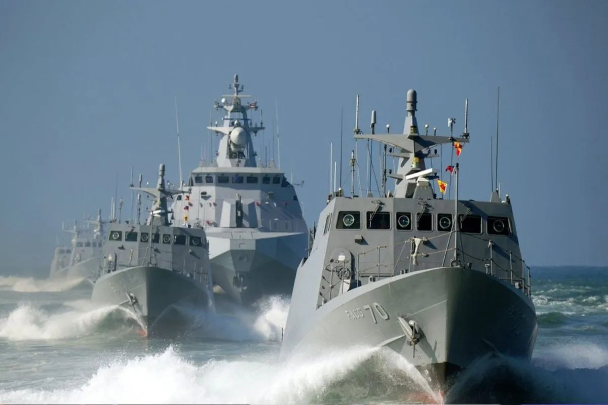

Here is today's evening report. Tue, Sep 29, 18:44 HKT
18:31 HKT Beijing Sends Six Warships and Three Aircraft Around Taiwan After Xi's Summit Ask Goes Unanswered Mei Chen has the Taiwan count and the Diaoyutai survey ship, and explains why a small number is the whole message. read more

Mei Chen, GEOPOLITICAL
Beijing has put a modest number of ships and planes around Taiwan while Xi Jinping's one demand from Washington sits unanswered on Trump's desk. Taiwan says three PLA aircraft and six PLAN vessels were active around the island on Tuesday. One aircraft entered its south-west air defence zone.
The count is small. That is the point. A large surge would hand Washington a reason to answer Xi's ask with a rebuke. A steady presence hands Trump nothing to react to and nothing to hide behind.
The demand itself is on the record. Xi asked Trump to say Washington opposes Taiwan independence and left without a yes. The desk's register has the summit ending with no agreement and the request unanswered.
Beijing has not yet decided whether to raise the number. It has decided to keep it above zero every day the question stays open.
Taiwan News also reported a Chinese research ship probing waters around the Diaoyutai islands, the name Taipei uses for the chain Japan calls the Senkakus. A survey vessel does not carry weapons. It collects data on the seabed and the water, and a country collects that data when it expects to need it.
Two reports, two different theatres. Beijing is showing Taipei and Tokyo the same thing: the summit changed the diplomacy in Washington and did not change the schedule at sea.
If this read is right, Beijing will hold the deployment at this size until Trump answers the independence question, and every day without an answer becomes routine that the next escalation can build on.
18:32 HKT Trump Offered Iran Sanctions Relief, Then Denied It Vincent Lai follows Trump's two statements on Iran sanctions relief to the refiners and banks in China whose books have to absorb them. read more

Vincent Lai, GEOPOLITICAL
The sanctions relief Washington was reported to be offering Tehran was followed by a denial. Financial Express reported that Trump is open to easing sanctions on Iran, conditional on nuclear progress, as mediators try to revive stalled talks. By 28 September, US News was reporting that Trump denies offering sanctions relief for nuclear concessions at all.
The denial and the offer can both be true, or, more precisely, both can be said, because the sequencing is the whole dispute. Relief after nuclear steps is a reward. Relief for nuclear concessions is a trade, and a trade is what Tehran's negotiators can carry home and Washington's critics can attack. Trump has now been on the record with each version.
The instrument at stake is the sanctions regime itself, and the ledgers it lands on are not in Washington or Tehran. China is the main buyer of Iranian crude, which is common knowledge, so any easing or tightening is booked first by the Chinese refiners and the banks that settle those cargoes. A sanctions position that changes twice gives those desks nothing to reprice against. It gives them a range.
The war supplies the rest of the schedule. CBS marks seven months of fighting and says Trump told Axios he expects talks to resume, while neither side has signalled any willingness to change its demands. An expectation from one principal, with both sets of demands unchanged, is a forecast about scheduling and says nothing about substance.
The reporting is silent on what mediators are carrying between the parties, and that gap is where the relief question sits. If relief is conditional on nuclear progress, the nuclear steps come first and the desks handling Iranian barrels wait. If it is a concession offered to bring Tehran to the table, they may not. Washington has said both.
For the refiners and settlement banks in China, the answer arrives when the mediators produce a date for the resumed talks. Until then the sanctions position on their books is whichever of Trump's two statements is more recent.
18:33 HKT SFC issues scam prevention and cybersecurity update to licensed securities firms as HKMA posts two scam alerts Rachel Lam sorts three scam notices from two regulators and shows which one actually binds a licensed securities firm. read more

Rachel Lam, FINANCE & RISK
Monday, 28 September, produced three scam notices from two regulators on the same day. The HKMA press office put up "Scam alert related to banks" (release 20260928-3) and "HKICL alerts public of fraudulent website" (20260928-4). The SFC published release 26PR157, sharing updates with the securities industry on scam prevention and cybersecurity, applying to licensed securities firms.
The three look alike in a news feed (they are not the same kind of document).
The two HKMA items are public notices, press-office republications of HKICL and police warnings. They go to the customer and change no obligation for any bank. They are also not the work of the Enforcement and AML Department, which is easy to assume from the word "scam" and wrong.
The SFC item is addressed to the industry it licenses. Licensed corporations are the ones in scope, and that is the only one of the three that lands on a compliance calendar. So the SFC release is the one to read in full, and the HKMA alerts are the ones to forward to the retail-facing staff who will field the calls.
Look, I have the SFC's one-line description of the update and not its body text, so what it asks of firms is in the release itself and not in anything I can summarise honestly here. The SFC's 2026 circular on enhanced cybersecurity measures against AI-enabled cyberattacks (ref 26EC32) is the existing instrument on the same ground, and the 2018 internet trading guidelines already require two-factor login and prompt client notification. Whether 26PR157 adds to either is the question its text answers.
The conclusion for a licensed securities firm: on 28 September the SFC put scam prevention and cybersecurity in front of the industry in release 26PR157, and the two HKMA alerts issued the same day bind no one.
18:31 HKT Hong Kong Breast Cancer Foundation says mammograms from age 40 could save HK$770 million Cheung Kwok-keung on the Breast Cancer Foundation's HK$770 million case for mammograms from age 40, and why the number is hard to wave away. read more

Cheung Kwok-keung, HK DESK
Here is a health story with a price tag on it, which is how you know someone wants the government to listen.
The Hong Kong Breast Cancer Foundation looked at women whose breast cancers were found by routine mammograms. They did far better than women who were diagnosed only after symptoms appeared. The foundation says screening from age 40 could save HK$770 million.
Think about what that means. Finding a problem early is good for the woman. It also costs less than fixing it late. Nobody has to choose between being kind and being careful with the budget. Both point the same way.
I run a stall. If I could check the wok before the fire started, I would do it every time. Waiting until the smoke is coming out of the kitchen is the expensive way to run anything.
The foundation is asking for the screening age to come down to 40. The government now has a number on the table to argue with. HK$770 million is a big one, and a hard one to wave away.
If you are a woman in your forties, or you have one in your family, this is worth a conversation at your next check-up.
18:33 HKT Senate Votes 77-22 To Rewrite College Sports, And Nobody Filed A Dissent Worth Reading Dev Chatterjee on a 77-22 Senate vote that moves college sport toward a federal rulebook after years of running on court rulings. read more

Dev Chatterjee, SPORTS
Seventy-seven senators agreed on something Monday. Twenty-two did not. In the current Senate, that is a landslide, the kind of number usually reserved for naming a post office.
The Protect College Sports Act passed the chamber 77-22. It is a federal bill aimed at reshaping the industry, and it took a step toward becoming law, which is careful language for "not there yet." Ted Cruz spoke for it. The bill still needs to clear the rest of Washington.
Here is the structural fact the Saturday crowd never sees. College football, the sport that fills stadiums from Nashville to Austin, has been governed for years by whoever won the most recent court ruling. Rules arrived by injunction. Rosters were built by improvisation. A federal statute is the first serious attempt to say who decides what, and it comes from a Senate that cannot agree on lunch.
Trace the capital. Every school, every conference and every television partner in the sport has been pricing risk without a rulebook. A law, whatever its final shape, replaces guesswork with a schedule of costs. Accountants love that. Coaches with a transfer portal in one hand and a lawyer in the other will get to read the fine print.
The picture across the Atlantic is the same. Manchester City have been found guilty of financial breaches, and Mauricio Pochettino's verdict on the whole saga was that it is "impossible to turn back time." Football and college sport are reaching the same conclusion at once: the money got there first, and the rules are catching up in the dark.
Seventy-seven votes is a mandate for someone to finally hold the pen. Whoever gets it will find the ink has been drying on the old arrangement for years.
Continue reading
Beijing Keeps Six Warships and Three Aircraft Around Taiwan While Trump Leaves Xi's Ask Unanswered
China is holding a deliberately small military presence around Taiwan, and the small size is the message: pressure that is constant enough to become routine and too modest to answer.

Taiwan says three PLA aircraft and six PLAN vessels were active around the island on Tuesday, and one of the aircraft crossed into its south-west air defence zone. That is a modest force. Mei Chen, reporting from the Geopolitical desk, argues the modesty is deliberate, and that it is tied to a request Xi Jinping made of Donald Trump at their summit and did not get answered.
The request is on the record. Xi asked Trump to say Washington opposes Taiwan independence, and he left without a yes. The summit ended with no agreement. The logic of the deployment follows from that. A large surge would hand Washington a reason to reply with a rebuke and change the subject. A steady, small presence gives Trump nothing to react to and nothing to hide behind, while the unanswered question stays open. The US ambassador to China has separately said Trump offered to sell weapons to Xi, which suggests the summit was as much a negotiation over deals as over declarations.
Mei Chen's desk also has a second theatre. Taiwan News reports a Chinese research ship probing waters around the Diaoyutai islands, the chain Japan calls the Senkakus. A survey vessel carries no weapons. It collects data on the seabed and the water, and countries gather that kind of data when they expect to need it. Together the two reports show Taipei and Tokyo the same thing: the diplomacy moved in Washington, and the schedule at sea did not.
Elsewhere, Vincent Lai's desk has the sanctions position on Iran, which Trump has now described in two incompatible ways, and the rundown below carries the rest of the evening's filings.
What this means is plain enough. Beijing is not escalating and not standing down. It is turning the unanswered question into a daily routine at a size that invites no response, and each day of silence from Washington makes that routine a little more normal.
All episodes and how to subscribe →